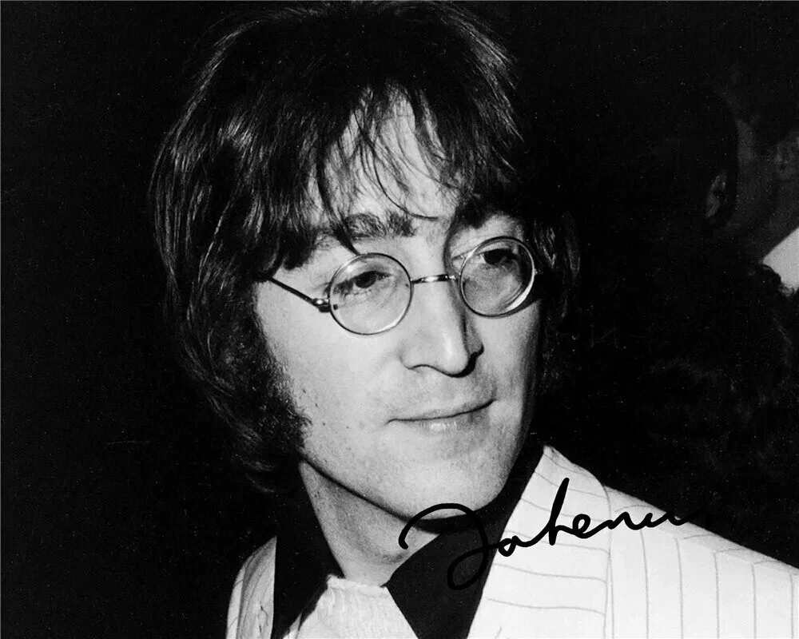
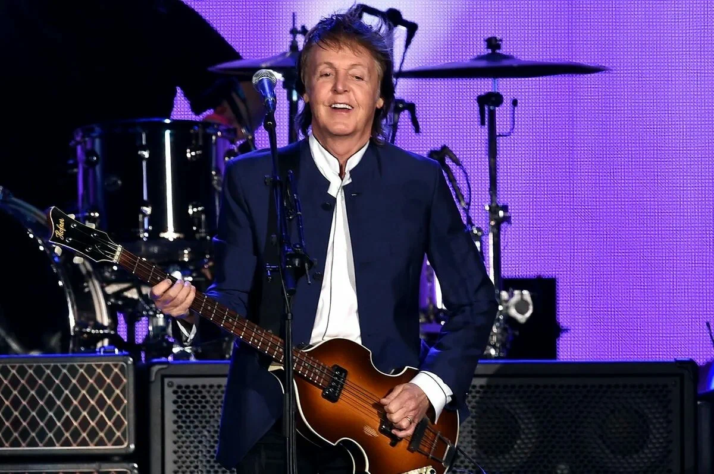
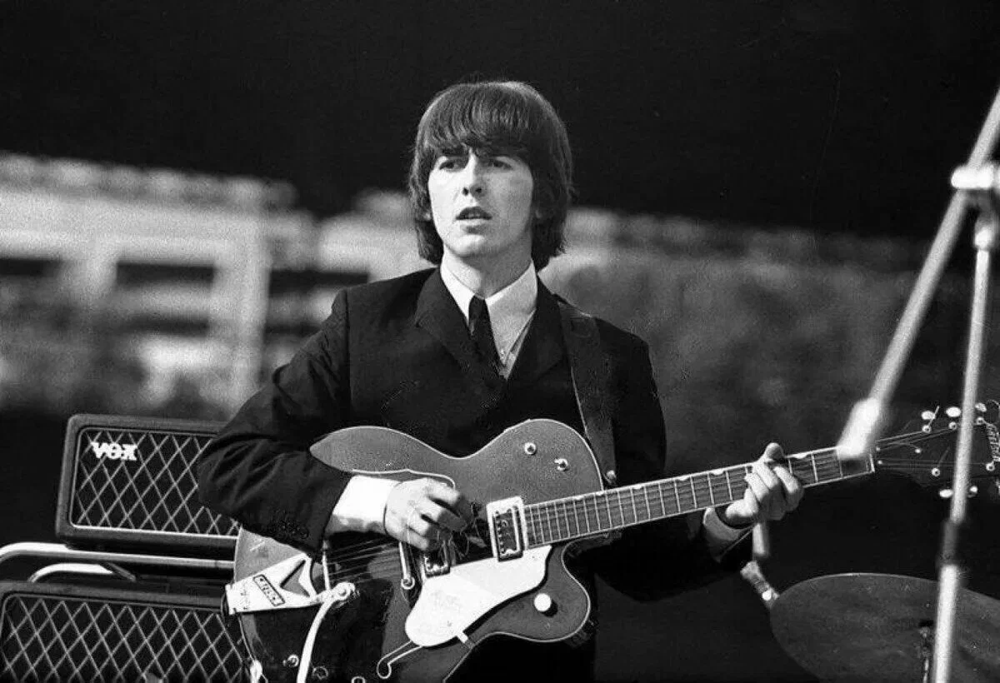
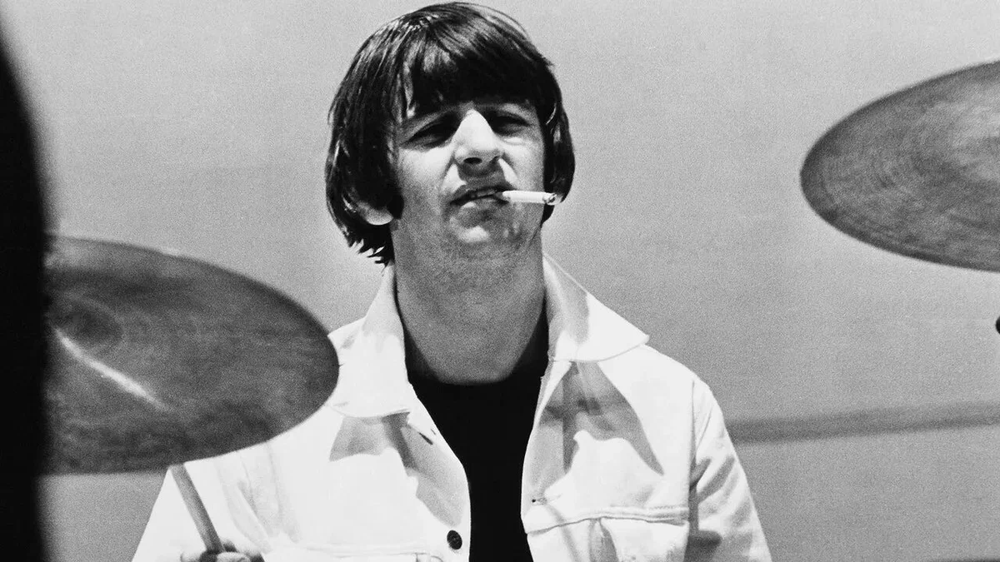

Главная |
Общая информация |
История |
Фильмография |
Дискография |
Истонички |
|
Контакты |
Общая информация
Название:"The Beatles" ("Битлз";отдельно участников ансамбля называют "битлами")
Страна:Великобритания (г.Ливерпуль)
Годы:1960-1970
Состав группы(те,кого весь мир знает как The Beatles):
- Джон Леннон — вокал, гитара, клавишные, губная гармоника, бас-гитара

- Пол Маккартни — вокал, бас-гитара, гитара, клавишные, ударные

- Джордж Харрисон — гитара, вокал, ситар, клавишные, бас-гитара

- Ринго Старр — ударные, перкуссионные инструменты, вокал

Также в разное время в составе группы выступали:
- Пит Бест(ударные,вокал)
- Стюарт Станклифф(бас-гитара,вокал)
- Джимми Никол(ударные)
После распада группы,произошедшего в 1970 году,каждый из ее участников начал сольную карьеру.
© Все права защищены.